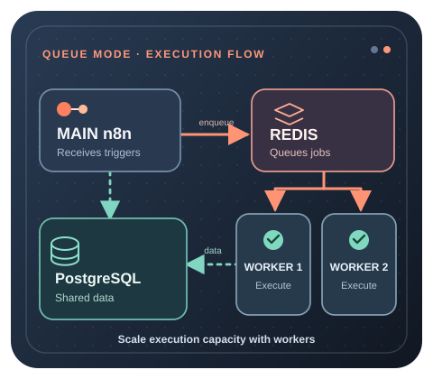

Stay in regular mode when
A single instance handles peak executions comfortably and CPU, RAM and execution latency remain stable. Queue mode adds components you do not need yet.
SCALING
Queue mode separates workflow execution from the main n8n process. The main instance receives triggers and creates executions, Redis coordinates the queue, workers execute jobs, and PostgreSQL stores the shared workflow and execution data.

QUICK DECISION
A single instance handles peak executions comfortably and CPU, RAM and execution latency remain stable. Queue mode adds components you do not need yet.
Sustained parallel executions create contention, execution latency rises under load, or you need to add execution capacity by running multiple workers.
The bottleneck is simply insufficient CPU or RAM and one larger instance can still meet the workload cleanly.
Use peak concurrency, CPU, RAM, execution duration, queue depth and database pressure to justify the move.
ARCHITECTURE
CORE REQUIREMENTS
All main and worker processes need reliable access to the Redis service used for queue coordination.
Main and workers must share the database. Queue mode is a distributed architecture and should not be designed around SQLite.
Main and workers must run queue mode and share the configuration needed to access Redis, PostgreSQL and encrypted credentials.
Workers need enough CPU and RAM for the workflows they execute. Adding processes does not remove the resource cost of each execution.
Enable queue mode on an existing self-hosted stack. First confirm that the n8n main service and every worker can reach the same PostgreSQL database and Redis over a private network. Set EXECUTIONS_MODE=queue on both main and workers, and supply QUEUE_BULL_REDIS_HOST=redis and QUEUE_BULL_REDIS_PORT=6379 when redis is your actual Compose service name. Use DB_TYPE=postgresdb, DB_POSTGRESDB_HOST=postgres and matching DB_POSTGRESDB_DATABASE, DB_POSTGRESDB_USER and DB_POSTGRESDB_PASSWORD on every process; replace the example service names with yours. Provide the exact existing N8N_ENCRYPTION_KEY to all of them. Never publish Redis or PostgreSQL host ports merely to connect containers on the same Compose network.
Launch an executor, not a second editor. Add an n8n worker service using the same pinned n8n image version and shared settings as main, but run it with the worker command. If you named that service n8n-worker, start it with docker compose up -d n8n-worker. After confirming actual execution on one worker, you can use docker compose up -d --scale n8n-worker=2 to start a second worker from that service. These are additions to an existing correctly configured Compose stack, not a standalone installation file; keep your existing persistent volumes, HTTPS proxy, secrets and backups.
Queue-mode Compose fragment for an existing stack. Merge the example below into your current compose.yaml; it is not a complete stand-alone deployment. It assumes you already have persistent, private postgres and n8n services, an existing N8N_VERSION pin in your environment and your own protected POSTGRES_PASSWORD and original N8N_ENCRYPTION_KEY. Match its names, volumes, database and n8n version to the existing project. Add the queue-mode Redis settings and EXECUTIONS_MODE=queue to the existing main service too, as described above.
# Merge with the existing services; do not replace your full Compose file.
services:
redis:
image: redis:7-alpine
command: ["redis-server", "--appendonly", "yes"]
restart: unless-stopped
volumes:
- redis_data:/data
n8n-worker:
image: docker.n8n.io/n8nio/n8n:${N8N_VERSION}
command: worker --concurrency=5
restart: unless-stopped
environment:
EXECUTIONS_MODE: queue
QUEUE_BULL_REDIS_HOST: redis
DB_TYPE: postgresdb
DB_POSTGRESDB_HOST: postgres
DB_POSTGRESDB_DATABASE: n8n
DB_POSTGRESDB_USER: n8n
DB_POSTGRESDB_PASSWORD: ${POSTGRES_PASSWORD}
N8N_ENCRYPTION_KEY: ${N8N_ENCRYPTION_KEY}
depends_on:
- redis
- postgres
volumes:
redis_data:
No host port is published for Redis or the worker in this fragment. Redis append-only persistence is an extra recovery layer, not a substitute for off-server backups. Keep the existing HTTPS and authentication configuration unchanged. For Code nodes requiring external task runners, configure the runner processes for your worker deployment separately; queue mode itself does not replace task runners.
Converting an existing SQLite instance? Do not simply change DB_TYPE and start against an empty PostgreSQL database: doing so does not migrate the old workflows and credentials. Before any cutover, back up the source database, persistent .n8n directory and original encryption key; use a supported n8n export/import or migration procedure, then verify workflows and encrypted credentials on a separate target. Keep the original files for rollback and use the Backup & Restore guide linked below for recovery preparation. Never delete database.sqlite as a shortcut.
WORKER CONCURRENCY
Each worker can process multiple jobs concurrently. n8n's current default worker concurrency is 10 and its documentation recommends concurrency of 5 or higher. Very low concurrency combined with many workers can create unnecessary database connections and exhaust the database connection pool.
A worker has spare CPU and RAM and the workflows are mostly waiting on external services rather than saturating compute or memory.
One worker process becomes a bottleneck and the database, Redis and infrastructure have capacity for more parallel execution.
Individual workflows are memory-heavy or CPU-heavy and parallel jobs cause contention, OOM pressure or unstable execution times.
More workers and more concurrency increase database activity. Scaling execution capacity without database capacity can move the bottleneck rather than remove it.
Know which concurrency limit actually applies. A worker can be started using n8n worker --concurrency=5, or the equivalent worker command in your Compose service. If N8N_CONCURRENCY_PRODUCTION_LIMIT is explicitly set to a value other than -1, that setting takes precedence in queue mode; otherwise n8n uses the worker's --concurrency value or its default of 10. Do not multiply worker count by a nominal default and call it guaranteed throughput: actual capacity depends on job duration, CPU, memory, external APIs and PostgreSQL connections.
WEBHOOKS
The main or webhook process receives the HTTP request, but a worker performs the workflow execution. That handoff through Redis adds some overhead. For latency-sensitive webhooks, measure end-to-end response time rather than assuming more workers automatically make every request faster.
Route webhook traffic to the right process. With dedicated n8n webhook processors behind a reverse proxy or load balancer, route production paths /webhook/* and /webhook-waiting/* to the webhook processors; keep /webhook-test/*, editor and API requests on main. Do not put main into the production webhook load-balancing pool unless you deliberately accept that added workload. A Respond to Webhook workflow may keep the client waiting until the worker finishes and returns its response, so queue mode is not a promise of instant HTTP responses or zero timeouts. Test the actual external callback and response behavior before switching traffic.
BINARY DATA
Queue mode does not support filesystem binary-data storage as the shared persistence model for distributed workers.
When workflows must persist binary data across distributed workers, use a storage design that every required instance can access, such as supported external object storage.
Webhook responses from workers travel back toward the receiving process. Large response bodies can increase Redis memory pressure and require deliberate response-storage configuration.
A workload that depends heavily on local files must be redesigned for shared persistence before workers are spread across machines.
Large webhook response boundary. Current n8n documentation gives N8N_WEBHOOK_RESPONSE_RELAY_SIZE_MAX a default of 64 MiB for a worker's response sent back through the queue. Redis can hold several copies in flight, so budget roughly 1.5 times the response size in Redis memory per concurrent large response. Without offloading, an oversized response fails instead of becoming magically faster by adding workers.
Version and license limits. From n8n 2.34.0, workers can use N8N_WEBHOOK_RESPONSE_RELAY_OFFLOAD_ENABLED=true to offload oversized webhook response bodies to readable shared binary storage, but first upgrade every main and webhook processor to 2.34.0 or later. The selected N8N_DEFAULT_BINARY_DATA_MODE must actually store data and be readable by every participating process. External S3 and Azure binary storage require a valid self-hosted Business or Enterprise license; do not assume Community Edition can enable them. The database binary mode can offload an oversized response without paid external storage, but the main instance loads the whole stored body into memory and database storage has its own file-size limit. For response-body offload specifically, n8n also describes a shared filesystem option when every instance mounts the same disk, but explicitly does not recommend that arrangement. Do not mistake this special offload path for support of filesystem-based persistent binary data in a distributed queue-mode deployment. Check your edition, version and storage configuration before enabling offload.
MONITORING
A queue that grows faster than workers drain it indicates insufficient execution capacity or a downstream bottleneck.
Measure saturation and memory peaks per worker. Idle workers with a growing queue point to another constraint.
Track the delay between an execution being created and actually starting, not only the workflow runtime itself.
Worker health endpoints can report whether a worker is alive and whether its database and Redis connections are ready.
Verify execution on a worker, not just a green container. With a correctly configured Compose stack, check docker compose ps and docker compose logs --tail=100 n8n-worker (replace the service name if different). Run a harmless published production workflow using a scheduled trigger or test webhook, then match its execution in n8n's Executions view to actual worker processing in the worker logs. An editor that opens successfully, a running Redis container or a queued execution alone does not prove a worker has performed the job.
Check dependencies and readiness. With default example service names, docker compose exec -T redis redis-cli ping should receive PONG when Redis authentication permits it, and docker compose exec -T postgres pg_isready -U n8n -d n8n checks PostgreSQL readiness (adapt credentials and service names). Enable QUEUE_HEALTH_CHECK_ACTIVE=true on a worker when you need its private /healthz and /healthz/readiness endpoints; the readiness endpoint checks Redis/database connectivity. Do not expose those worker endpoints publicly just to monitor them.
Manual runs are a different test. By default OFFLOAD_MANUAL_EXECUTIONS_TO_WORKERS=false, so manually running a workflow in the editor can execute on main even when queue mode is correctly configured. Set it to true only if you intend to send manual executions to workers and have checked the change in a staging environment. Queue-mode workers are also distinct from n8n external task runners, which have separate configuration requirements for Code-node execution.
SCALING PATH
Partner link: we may earn a commission from purchases.
HIGH AVAILABILITY BOUNDARY
Every worker must use the same N8N_ENCRYPTION_KEY as the main instance so workers can decrypt credentials required by workflow executions.
Main, webhook and worker processes should run the same n8n version. Mixed versions can create incompatible behavior during rolling changes.
When incoming webhook volume becomes the bottleneck, dedicated webhook processors can sit behind a load balancer while workers handle execution. Do not add this layer unless measured request volume justifies it.
Running multiple main processes for high availability is not the same as ordinary queue mode. n8n currently documents multi-main as a self-hosted Enterprise feature with additional load-balancer and session requirements.
Official queue-mode architecture and configuration
FAQ
Yes. Redis is the message broker that coordinates pending executions between the main instance and workers.
No for the distributed queue-mode architecture. Main and workers need shared database access, and n8n documents PostgreSQL as the database for this setup.
There is no universal count. Start from measured concurrency and worker utilization, then add capacity while monitoring PostgreSQL, Redis, CPU, RAM and queue depth.
It is the number of jobs a worker may process in parallel. The current default is 10, and n8n recommends worker concurrency of 5 or higher rather than creating many low-concurrency workers.
Only when the workload justifies it. A small deployment that runs comfortably as one instance is usually simpler to operate without Redis and separate workers.
VPS requirements · VPS plans & sizing · Production security · Backup & restore · Main n8n VPS guide
For provider choice, one-click setup, support boundaries, backups, migration, region and scaling, use the Best VPS for n8n comparison. For resource sizing, return to the main VPS for n8n guide.